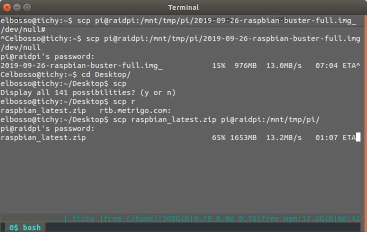
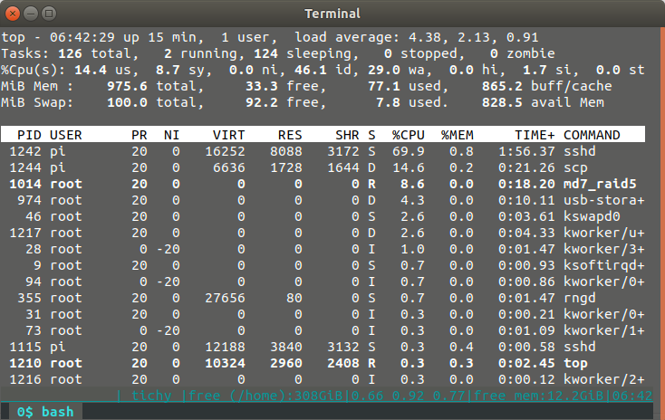

Updates
Ich habe mir neulich überlegt, ob man einen Pi als Raid benutzen könnte - aber nicht mit dem ewig gleichen Setup mit 4 USB-Sticks...
Nachdem ich in meinem Home-Server neue Platten eingebaut habe, hatte ich vier 2-TB-Modelle quasi herumliegen. Da ich nicht so gestrickt bin, wie einer meiner werten Kollegen, der auch schon mal mit der Bohrmaschine dafür sorgt, dass der Datenschutz auf ausrangierten Datenträgern gewahrt bleibt und ich eher - wie es ein anderer geschätzter Kollege einmal ausdrückte - ein Hardware-Messi bin (nicht weil ich so gut damit jonglieren kann), stand ich vor der Aufgabe, mir eine einigermaßen vernünftige Zweitverwertung dafür einfallen zu lassen.
Da ich praktisch zeitgleich eine Dauerleihgabe in Gestalt eines Raspberry 3B wieder zurückbekam, spaltete - wie es Mark Twain einmal formulierte - eine kolossale Idee vom Kopf bis zu den Zehen: Ich könnte den Pi zu einem Raid-Server oder NAS machen.
Diese Idee kam mir, weil ich vor vielen Monden einmal ein USB 3.0 Gehäuse gekauft hatte, in das man vier Festplatten einbauen kann. Diese vier Festplatten kann man dann in dem Rechner, an den das Gehäuse angeschlossen wird verwalten - zum Beispiel kann man aus diesen vier ein Software-Raid mittels mdadm erstellen.
Das tat ich - natürlich mit potenter Hardware und USB 3.0 Verbindung (auch damit dauerte das Erstellen des Raid5 aus vier Festplatten mit jeweils 2 TB Kapazität und einer resultierenden Gesamtnettokapazität von 6TB immerhin schon über 10 Stunden).
Aber das schöne an Software-Raid - und an Liux-Software-Raid im Besonderen - ist die Tatsache, dass man das Raid nehmen und an einen anderen Rechner anschließen kann - danach steht es an diesem neuen Rechner sofort zur Verfügung. Nachdem das Raid also fertig erstellt war bootete ich meinen Pi mit einem nagelneuen Raspbian, installierte mdadm nach und siehe da: Ein neues Gerät erschien, das ich nur noch mounten musste - schon hatte ich an einem Raspberry Pi einen 6TB-Massenspeicher zur Verfügung.
Mein erster Test war der der Schreibgeschwindigkeit - wegen des Fehlens von USB 3.0 am Pi musste ich hier mit USB 2.0 vorlieb nehmen. Aber die Ergebnisse nach den Tests waren ermutigend: beim Schreiben erzielte ich 35 MB/s und beim Lesen immerhin noch 20-30 MB/s. Damit konnte ich den nächsten Schritt angehen und die Performance mitels rsync (sftp) und Samba testen.
Die Übertragung mit rsync (sftp) war erwartungsgemäß in der Lage, die Bandbreite des Ethernet-anschlusses in die Sättigung zu treiben: Da der Pi 3B nur 100Mbit an der Ethernet-Schnittstelle anbietet war das nicht anders zu erwarten gewesen - damit blieben als maximale Schreib- und Leserate nur noch 10 MB/s übrig - die wurden beim Schreiben auch erreicht.
Allerdings war der Prozessor allerdings auch extrem ausgelastet - den Löwenanteil beanspruchte dabei sshd - das Raid selbst bzw. dessen Overhead war vernachlässigbar bei meistens unter 10%.
Ähnlich sah das Ganze beim Lesen aus - allerdings reichte hier die Leserate nicht an die Sättigung heran - bei 8MB/s war Schluss - eventuell ein Zeichen dafür, dass das Verschlüsseln eine Operation ist, durch die der Pi an seine Grenzen stößt.
Dieser Verdacht wurde beim test mit Samba wieder in Frage gestellt: Beim Schreiben erreichte der Durchsatz nicht ganz den möglichen und blieb mit 9,6MB/s leicht darunter - aber Samba hat das meines Wissens eigentlich noch nirgends und zu keiner Zeit geschafft - unabhängig von der Hardware. Die CPU-Auslastung des Systems betrug dabei aber lediglich 40% - ein Wink, unter Umständen Samba doch noch nicht ganz abzuschreiben. Das Lesen blieb weiter hinter den Möglichkeiten zurück: auch hier waren es wieder nur 8 MB/s - bei einer CPU-Last von unter 10%.
Dieser Test brachte mich dazu, zu überlegen, ob ich mir nicht vielleicht doch noch einen Test mit einem externen USB-GBit-Netzwerkadapter gönnen sollte - mit denen ist auch an einem Pi 3B die maximale USB 2.0 Bandbreite (384 MBit/s) theoretisch zu erreichen. Selbst wenn sich Festplatte und Netzwerk brüderlich reinteilen, könnte man so eine Steigerung der bisher erreichten Testwerte auf das anderthalbfache erreichen.
Das könnte auch ein Beweggrund sein, dasselbe auch noch einmal mit einem 3B+ oder gar 4er Modell zu probieren.
Ich habe wie immer eine Liste von Links zusammengestellt, die mir bei der Umsetzung geholfen haben:
Aktualisierung vom 31. Januar 2020

Lese- und Schreibraten

Prozessorauslastung
Aktualisierung vom 25. April 2020
Schreiben aufs Raid:
scp large.file user@pi:/mnt/tmp/target/folder/
Ergebnis war eine Datenrate, die um 14 MB/s schwankte. Die Systemauslastung betrug laut top 90%, die Load lag - ebenfalls per top gemessen - über 4.
Lesen vom Raid:
scp user@pi:/mnt/tmp/target/folder/large.file /dev/null
Ergebnis war eine Datenrate, die um 13 MB/s schwankte. Die Systemauslastung betrug laut top 63%, die Load lag - ebenfalls per top gemessen - um 1.5.
Links
Raspberry Pi Zero W „headless“ Setup – so geht’s
Raspberry Pi Zero W ausprobiert
Raspberry Pi Zero in Betrieb nehmen
Inbetriebnahme Raspberry Pi Zero W
How to do a Raspberry Pi headless setup
Benchmark USB HDD
Getting Gigabit Networking on a Raspberry Pi 2, 3 and B+
Raspberry Pi network speed test: RPI2, RPI3, Zero, ZeroW (LAN&WiFi)
Raspberry Pi 3B+ Network Speed
Raspberry Pi als Fileserver
Artikel, die hierher verlinken
Beschleunigung von scp trotz verhältnismäßig schwacher Hardware
19.01.2023
Im Zuge meiner neuerlichen Experimente mit dem von mir liebevoll so genannten Trump-Board wurde ich mir wieder eines schmerzlichen Defizits dieser (und ähnlicher) Hardware bewusst: der mangelnden Geschwindigkeit beim Kopieren großer Dateien über das Netzwerk.
Überwachung Festplattenstatus mit Grafana
15.02.2022
Ich hatte nach dem Update meines Raid mit größeren Platten festgestellt, dass der automatische Standby nach einiger Zeit Nicht-Benutzung nicht mehr funktionierte.
Raspberry mit schnellem Massenspeicher
30.05.2020
Ich habe auf meinem Raspberry 3 eine Instanz InfluxDB und Grafana fürs Monitoring installiert. Diese Konfiguration läuft nun bereits verhältnismäßig lange und ich stellte erste Abnutzungserscheinungen fest...


Vor 5 Jahren hier im Blog
-
DIY EBook-Reader III
30.09.2019
Es ist schon längere Zeit vergangen, seit dem ich über Fortschritte dieses Projekts berichtet habe
Weiterlesen...
Tags
Android Basteln C und C++ Chaos Datenbanken Docker dWb+ ESP Wifi Garten Geo Git(lab|hub) Go GUI Gui Hardware Java Jupyter Komponenten Links Linux Markdown Markup Music Numerik PKI-X.509-CA Python QBrowser Rants Raspi Revisited Security Software-Test sQLshell TeleGrafana Verschiedenes Video Virtualisierung Windows Upcoming...
Neueste Artikel
- sQLshell endlich wieder per WebStart verfügbar!
Die sQLshell ist nunmehr wieder in drei Deploymentvarianten verfügbar: Dem Standardinstaller für Linux und Windows, der portablen Version zum Start von - zum Beispiel - einem USB-Stick und endlich wieder als WebStart-Variante
Weiterlesen... - Ubuntu Upgrade auf 24.04 - Lessons learned
Ich hatte letztens ein Issue bei Eye of Gnome eröffnet, wo mir während der Diskussion gesagt wurde, dass ich einfach eine viel zu alte Version einsetze - mit der aktuellen könne das nicht nachvollzogen werden. Das startete eine wilde Reise - Ich verwendete nämlich noch die letzte LTS-Release von Ubuntu (22.04) und führte zunächst ein Upgrade auf 24.04 aus - oder zumindest wollte ich das...
Weiterlesen... - Self-hosted Geo-Coding mit nominatim
Nachdem ich neulich eine Lösung zur Navigation in meinen Docker-Zoo holte, habe ich nunmehr nachgelegt: Für eins meiner Wochenendprojekte benötigte ich eine Möglichkeit, (inverses) Geo-Coding über eine API nutzen zu können - natürlich im besten Fall wieder self-hosted...
Weiterlesen...
Manche nennen es Blog, manche Web-Seite - ich schreibe hier hin und wieder über meine Erlebnisse, Rückschläge und Erleuchtungen bei meinen Hobbies.
Wer daran teilhaben und eventuell sogar davon profitieren möchte, muß damit leben, daß ich hin und wieder kleine Ausflüge in Bereiche mache, die nichts mit IT, Administration oder Softwareentwicklung zu tun haben.
Ich wünsche allen Lesern viel Spaß und hin und wieder einen kleinen AHA!-Effekt...
PS: Meine öffentlichen GitHub-Repositories findet man hier - meine öffentlichen GitLab-Repositories finden sich dagegen hier.